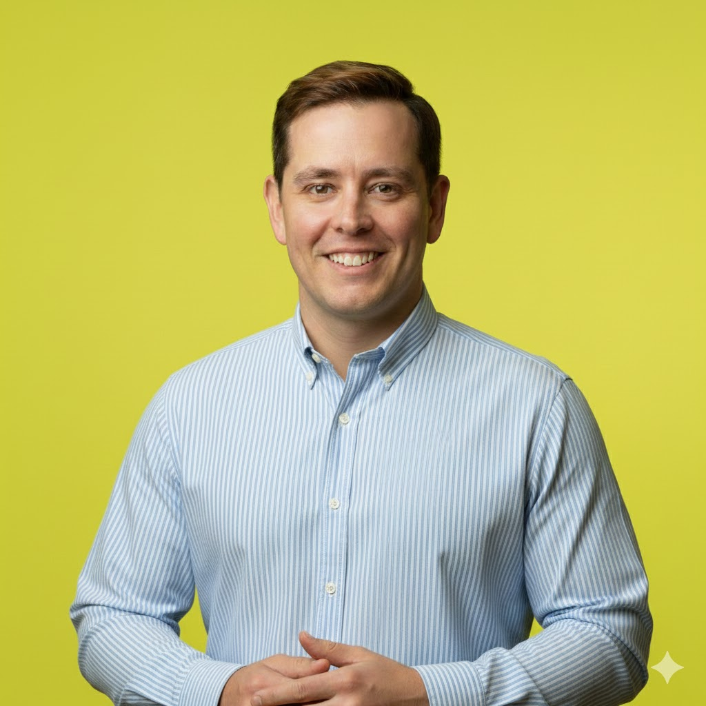

Un cargador tiene prestaciones.
El cliente necesita motivos.
Convertí el producto en mensajes, contenido y materiales para clientes e instaladores. Gestión de redes y comunicación para las líneas Solar y eMobility.

Transformo conceptos complejos y tecnologías verdes en razones claras para comprar. Gestiono redes sociales y creo contenido para que el cliente entienda el valor, resuelva sus dudas y dé el siguiente paso.
Hablemos por WhatsAppVuestro producto tiene valor. Mi trabajo es hacerlo evidente.
Quien busca un cargador quiere respuestas: cuál le sirve, qué necesita para instalarlo, cuánto le cuesta y quién le ayuda después.
Ahí entro yo. Convierto la información técnica en mensajes que el cliente entiende. Los llevo a la web, los anuncios y las redes sociales. Creo contenido que despeja dudas y da motivos para contactar.
He trabajado con energía solar, recarga y movilidad eléctrica. Sé hablar con producto, instaladores y ventas, y traducir ese conocimiento al lenguaje del comprador.
Para Wallbai y Wikita quiero hacer ese trabajo cada día: gestionar las redes, crear contenido útil, atraer a las personas adecuadas y medir qué acaba en una oportunidad comercial.
Mi CV en españolRedes sociales, contenido, campañas y comunicación técnica. Abre cada caso: verás las piezas y qué hice en el proyecto.
Convertí el producto en mensajes, contenido y materiales para clientes e instaladores. Gestión de redes y comunicación para las líneas Solar y eMobility.
Gestión de redes y creación de contenido para distintos mercados. Un sistema visual que mantiene la marca clara en LinkedIn, Instagram, Facebook y web.
Campañas de Meta Ads y seguimiento del contenido en redes. Datos para decidir qué mantener, qué cambiar y dónde invertir.
Contenido sobre recarga, energía e instaladores. Información técnica convertida en argumentos que ayudan a entender el producto y su valor.
Ferias, formación y activación de canal, con creación de contenido y difusión en redes para ampliar el alcance del trabajo presencial.
Ventas de servicios y cargadores a las que contribuí en LIVOLTEK mediante acciones comerciales y alianzas.
Presupuesto anual de marketing gestionado en LIVOLTEK para las líneas Solar y eMobility.
Experiencia en marketing, contenidos y desarrollo de negocio entre Europa y Asia.
Las cifras corresponden a mi trayectoria profesional. El portfolio y el CV amplían el contexto de cada proyecto.
Así empezaría con vosotros.
Primero entender el negocio. Después crear, publicar y medir. Este sería un primer ciclo de cuatro semanas, ajustado a la jornada y al presupuesto.
Revisar la tienda, las fichas de producto y la medición. Acordar con ventas qué define una compra o un contacto con intención real.
Plantear campañas de búsqueda en Google y pruebas en Meta. Separar mensajes para quien busca un cargador y quien necesita una instalación.
Organizar el calendario y la gestión diaria. Crear contenido sobre instalaciones reales, dudas frecuentes y elección del cargador. Coordinar los vídeos con el equipo y validar los detalles técnicos.
Revisar conversiones, coste por venta y calidad de las consultas. Ajustar anuncios, contenidos y seguimiento según lo que está generando negocio.
«Qué cargador necesito» / «Así es una instalación real» / «Qué incluye el presupuesto»
Partir de la necesidad del cliente, el objetivo comercial y la evidencia técnica.
Construir el relato, el sistema visual y las adaptaciones para cada canal.
Revisar la información con producto o negocio. Cada audiencia necesita un argumento distinto.
Gestión de redes sociales y creación de contenido a lo largo de mi trayectoria. Estrategia, publicación, campañas y coordinación con ventas.
Marketing B2B · Seúl
Posicionamiento y entrada en mercados asiáticos. Gestión de redes sociales, creación de contenido comercial y captación de socios y distribuidores.
Responsable de Marketing Iberia
Gestión de redes sociales y creación de contenido para Solar y eMobility. Campañas con instaladores, comunicación técnica y activación comercial.
Responsable de Marketing Europa
Gestión de redes sociales y creación de contenido para LinkedIn y web. Materiales técnicos adaptados a compradores y distribuidores europeos.
Responsable Global de Marketing
Gestión de redes sociales, creación de contenido y campañas en Europa, MENA y Latinoamérica. Coordinación de un equipo de cinco personas.
Consultoría y diseño
Marketing de eventos, gestión de redes sociales y creación de contenido en movilidad eléctrica. Diseño de material promocional, incluidas chaquetas.
Proyectos de Ventas y Marketing · Hangzhou
Gestión de redes sociales y creación de contenido para Latinoamérica. Lanzamientos, comunidades e influencers en Discord, Twitter y Telegram.
Crecimiento de Producto · Shanghái
Gestión de redes sociales y creación de contenido para captación. Crecimiento de usuarios activos de 10.000 a 200.000 y más de 2.000 colaboraciones con influencers.
Dirección de Marketing · Shanghái
Marketing de seis establecimientos. Gestión de redes sociales, creación de contenido, promociones y eventos con marcas colaboradoras.
Marketing · Shanghái y Hong Kong
Lanzamiento de una marca de moda en 57 tiendas. Gestión de redes sociales y creación de contenido para marca, campañas y comunicación comercial.
Marketing digital · Shanghái
Gestión de redes sociales y creación de contenido para mercados internacionales. Campañas de SEO, SEM y email marketing.
Marketing · Madrid
Apoyo en gestión de redes sociales y creación de contenido, eventos, exposiciones y relaciones públicas entre España y Asia.
Google Ads · Meta Ads · Google Analytics · WordPress · Mailchimp · SEMrush · HubSpot · Adobe Creative Suite · Canva
OpenAI Academy: AI Foundations, Applied AI Foundations, Agents and Workflows.
Anthropic Academy: Claude 101.
Español nativo · Inglés profesional · Chino HSK 3 · Coreano básico
FORMACIÓN SECTORIALInstalaciones solares y almacenamiento BESS. Dos cursos de 150 horas, 2025.
Una conversación para conocer vuestras prioridades
y ver dónde puedo aportar desde el primer día.
+34 630 257 109
gigicolinas@gmail.com